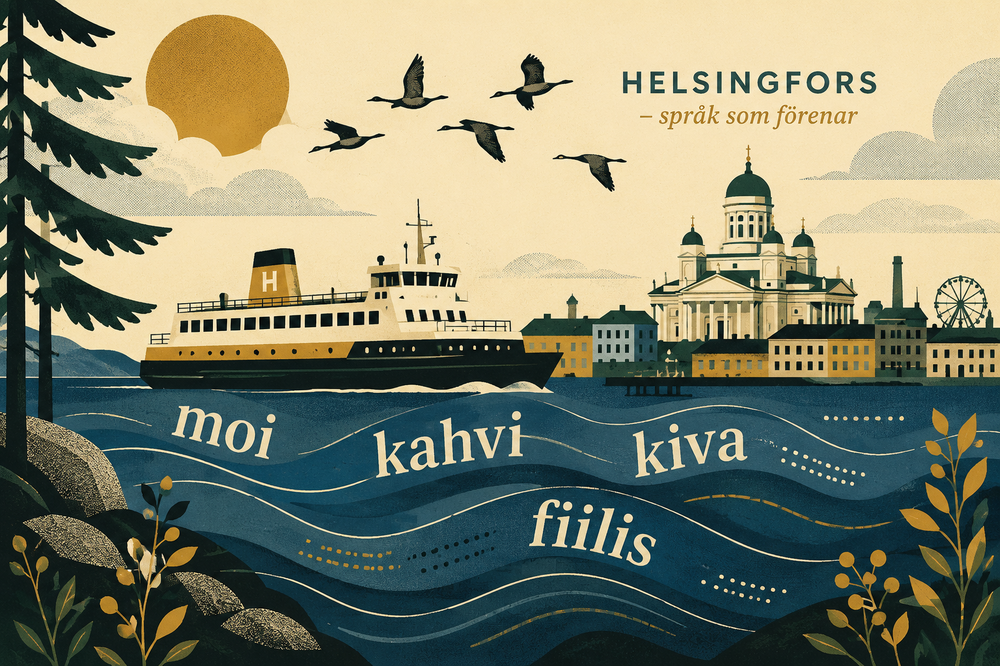

moi
hej
Vänligt, kort och användbart nästan överallt.Helsingfors, bibliotek, sjöluft och vardagsspråk
En lekfull väg in i modern finska. Ord, uttal, vardagsfraser och grammatik i små steg.

Sanat
Små ord som ofta dyker upp i samtal, chattar, caféer och kollektivtrafik.
hej
Vänligt, kort och användbart nästan överallt.kul, trevlig
Ett mjukt vardagsord för något som känns bra.coolt, snyggt
Kan beskriva en plats, en idé eller en riktigt fin skiva.jobb
Vardagligt ord, ungefär som svenskans "kneget" eller "jobbet".hänga
Att vara med folk utan större plan. Bara finnas där.sociala medier
Kortform av sosiaalinen media, ofta använd i vardagen.laptop
Ett modernt, praktiskt ord för datorn i väskan.meddelande
Både digitalt och mänskligt: något skickas från en till en annan.känsla, stämning
Det som sitter i rummet, musiken eller kroppen.kaffe
En trygg första vän i finskan. Och på stationen.ursäkta, förlåt
Bra när du vill fråga något, komma förbi eller rätta ett litet misstag.butik, affär
Ett vanligt ord på skyltar och i vardagliga samtal.tåg
Hyödyllinen sana – ett nyttigt ord på resan.väder
Ett litet ord som öppnar många samtal i Norden.vän
En person man tycker om och gärna delar tid med.i lugn och ro
Som i ota rauhassa – ta det lugnt.Puhekieli
Finska i böcker och finska vid ett cafébord kan låta olika. Båda är värda att känna igen.
| Standardspråk | Vardagligt |
|---|---|
| minä olen | mä oon |
| sinä olet | sä oot |
| en tiedä | emmä tiiä |
| mitä kuuluu? | mitä kuuluu? |
| kiitos | kiitti |
| hyvä | hyvä / jees |
| minulla on | mulla on |
| sinulla on | sulla on |
| minun täytyy | mun pitää |
| mennäänkö? | mennäänks? |
| oletko sinä? | ootsä? |
Talspråk varierar mellan olika delar av Finland. Helsingforsfinska, österbottniska uttryck och språk nära svenska kan ha olika rytm och färg.
Hyödyllisiä lauseita
Korta meningar för möten, caféer, butiker och resor. Börja med hela fraser och låt grammatiken komma efter hand.
Artig genväg: Lägg till kiitos i slutet. Det fungerar ofta ungefär som svenskans ”tack”.
Ääntäminen
Finskan uttalas ganska nära hur den skrivs. Det fina är att bokstäverna ofta håller vad de lovar.
tuli = eld
tulli = tull
muta = lera
mutta = men
tapan = jag dödar
tapaan = jag träffar
Helsinki
Betona Hel: HEL-sin-ki.
kiitos
Två tydliga i: KII-tos.
hyvää yötä
God natt – öva särskilt y och ö.
Aika ja numerot
Några byggstenar som hjälper med priser, tider, biljetter och enkla planer.
Mitä kello on?
Vad är klockan?
Kello on kolme.
Klockan är tre.
Tavataan huomenna.
Vi träffas i morgon.
Tänään / huomenna / eilen
I dag / i morgon / i går.
Pienin askelin
Finska bygger ofta betydelse med ändelser i stället för småord. Det är ovant först, men mycket logiskt när ögat vänjer sig.
minä olen kotona
jag är hemma
minä menen kotiin
jag går hem
minä tulen kodista
jag kommer hemifrån
en puhu suomea
jag talar inte finska
et tiedä
du vet inte
hän ei tule
han eller hon kommer inte
Tavallisia verbejä
Lär dig först jag-formen och ett kort exempel. Då får varje verb genast ett sammanhang.
att vara
Olen kotona – jag är hemma.att gå, åka
Menen töihin – jag går till jobbet.att komma
Tulen huomenna – jag kommer i morgon.att tala
Puhun vähän suomea – jag talar lite finska.att förstå
Ymmärrän – jag förstår.att vilja
Haluan kahvia – jag vill ha kaffe.att behöva
Tarvitsen apua – jag behöver hjälp.att tycka om
Tykkään musiikista – jag tycker om musik.att veta
En tiedä – jag vet inte.att se
Nähdään pian – vi ses snart.att äta
Syön lounasta – jag äter lunch.att dricka
Juon vettä – jag dricker vatten.Pieni testi
Svara fritt och få direkt återkoppling. Små steg räknas också.
Kulttuuri
Språket kan läras genom kultur, ljud och vardag, inte bara grammatik. Finska blir lättare när den får en plats, en röst och en rytm.